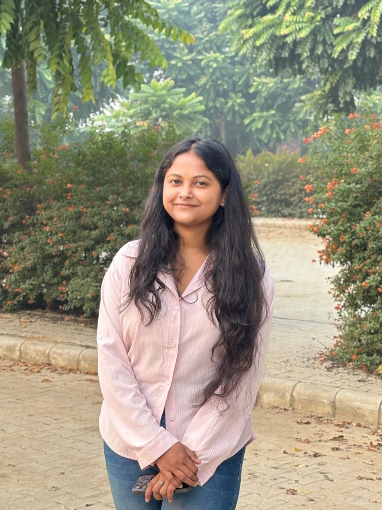

Certificates


MSc (Hons) Microbiology | Research Portfolio
Focused on microbial biotechnology, food microbiology, and sustainable biopolymer research.

I am Chandna Biswas, currently pursuing MSc (Hons) in Microbiology. My research interests include microbial biopolymer production, food microbiology, and industrial microbial processes. I actively participate in scientific conferences and research discussions in biotechnology.
Presented research on: Microbial Production of Edible Biopolymer Films for Food Packaging
Participated in biotechnology lecture series organized by Department of Biotechnology, Government of India.
Email: chandna@email.com
GitHub: github.com/chandhanabrozen-sudo